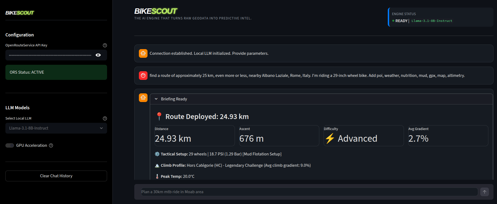

The AI Engine that turns raw geodata into Predictive Intel.
Plan with certainty and scout the terrain before you ride: analyze soil drainage, wind vectors, and technical grade before you drop in.
BikeScout isn't just a map tool; it's a Tactical Intelligence Engine. It transforms static geographical data (OSM) into actionable insights by simulating real-world physics, weather history, and technical terrain difficulty.
Whether you are planning a gravel expedition or an E-MTB mission, BikeScout calculates the "hidden variables" that generic navigators ignore.
The Model Context Protocol (MCP) is an open standard that allows AI agents (like Claude, ChatGPT or Ollama) to use external tools safely and efficiently.
By running BikeScout as an MCP server, you give your AI the "eyes" to see trails, "hands" to generate GPX files, and the "brain" to analyze soil conditions, turning a simple LLM into a professional cycling scout.
Bridging the gap between maps and reality.
Predicting the unpredictable.
Precision routing for AI agents.
Energy management for man and machine.
Standard navigation tools like Google Maps or Komoot are designed for simple "lines on a map." BikeScout is built for Mission Planning, bridging the gap between raw data and technical reality.
| Feature | Generic Navigators | BikeScout Tactical AI |
|---|---|---|
| Elevation Accuracy | Raw & Inflated | Filtered & Realistic (SMA) |
| Surface Analysis | Basic (Paved/Dirt) | Technical (S-Scale/Tracktype) |
| Effort Calculation | Time-based average | Physics-based (Weight/Friction) |
| Condition Prediction | Future Weather only | Mud Risk (72h Rain + Soil Memory) |
| Climb Categorization | None | UCI-Standard (Cat 4 to HC) |
| Logistics | Sponsored / Restaurants | Tactical (Water/Repair/Shelter) |
| AI Integration | Manual / External | Native MCP Tooling |
| Platform | Focus | Why BikeScout Wins |
|---|---|---|
| Komoot | Discovery & Planning | We add live environmental risk-context. |
| Strava | Social & History | We focus on predictive safety, not just past performance. |
| Trailforks | Trail Ecosystem | We provide a personalized intelligence layer for your setup. |
| Generic AI | Broad Reasoning | We are a precision cycling engine with real-time telemetry. |
Follow these sections to deploy BikeScout in your environment.
Pre-Requirements:

The BikeScout Tactical GUI is a high-performance, interactive control center designed for cyclists and trail scouts who need real-time, data-driven mission planning. Built on top of the Streamlit framework, it serves as a bridge between localized Large Language Models (LLMs) and specialized tactical tools.
Unlike a standard chat interface, this GUI is an Intelligence Dispatcher: it translates natural language requests into precise parameters for geospatial analysis, weather windowing, and physiological fueling plans.
llama-cpp-python, ensuring your mission data stays private and functions without an internet connection.
How to use the GUI:
git clone git@github.com:hifly81/bikescout.gitpython3 -m venv venvsource venv/bin/activatepip install bikescoutstreamlit run src/bikescout/app.pyThe application will open in your default browser at: http://localhost:8501/
ORS_API_KEY.
Note: Ensure you have approx. 5GB - 8GB of free disk space.
Prompt Example:
"Find a route of approximately 25 km nearby Albano Laziale, Rome, Italy. I'm riding a 29-inch wheel bike. Include POIs, weather, nutrition, mud analysis, GPX export, map, and altimetry."
Pre-Requirements:
To integrate BikeScout with your preferred MCP client (e.g. Claude Desktop, Cursor, Google Antigravity), add the following configuration to your settings file:
Add the server to your MCP client config file:
.claude/settings.json
.cursor/mcp.json
.gemini/antigravity/mcp_config.json
.codex/config.toml
.codeium/windsurf/mcp_config.json
{
"mcpServers": {
"bikescout": {
"command": "PATH/TO/YOUR/PYTHON_VENV",
"args": ["-u", "-m", "bikescout.mcp_server"],
"env": {
"PYTHONPATH": "PATH/TO/SRC",
"ORS_API_KEY": "YOUR_KEY"
}
}
}
}
Pre-Requirements:
To integrate BikeScout Skills with your preferred MCP client (e.g. Claude Desktop, Cursor, Google Antigravity), follow these steps:
Add the .agents/skills folder in the following locations:
~/.agents/skills
~/.gemini/antigravity/skills
~/.agents/skills
Pre-Requirements:
.env.example to .env and paste keys:
If you prefer a private and free experience without external API costs.
Pre-Requirements:
.env.example to .env and paste keys:
To integrate the MCP tools within the Open WebUI interface, follow these steps:
| Field | Tactical Value |
|---|---|
| Type | OpenAPI |
| URL | http://mcpo:8000/bikescout |
| OpenAPI Spec | Set to URL and use openapi.json |
| Auth | None |
| ID / Name | bikescout |
Once saved, you can enable this tool for your specific models in the New Chat, Workspace or Model settings, allowing the LLM to access real-time data through your MCP server.
You can test BikeScout using the MCP Inspector, a web-based tool for testing MCP servers. To launch the inspector and interact with the tools manually, run the following command from the root directory:
Run the test suite with pytest:
python3 -m venv venvsource venv/bin/activatepip install bikescout && pip install -e ".[test]"python -m pytestpython -m pytest --cov=src/bikescout --cov-report=term-missing